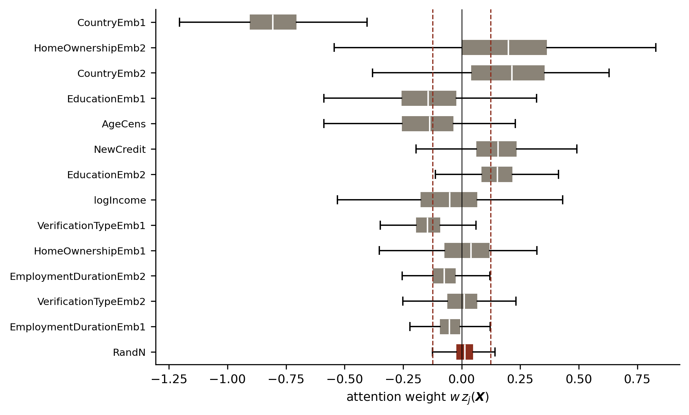
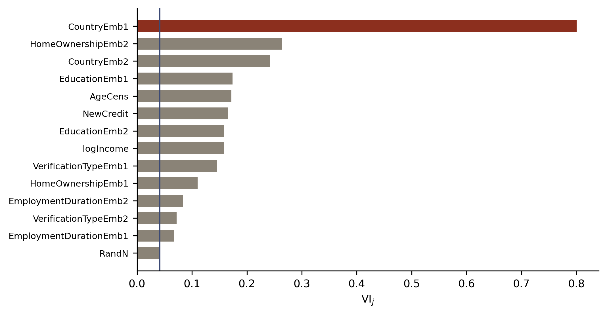
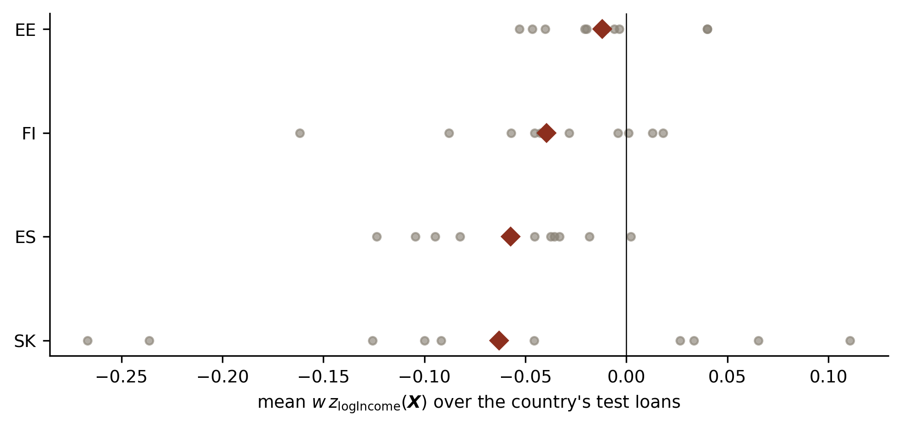
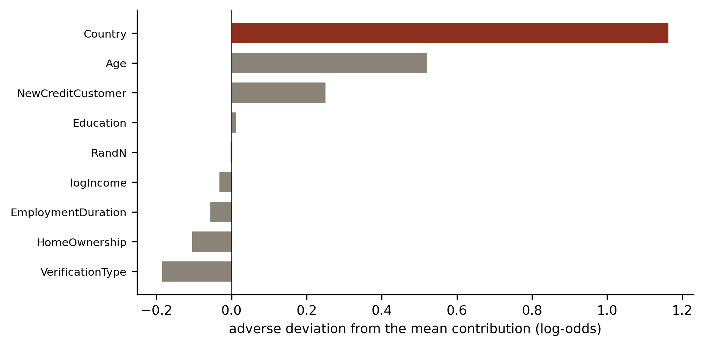

Deep Learning for Actuarial Modelling: a credit risk companion
Author
Mario Ervedosa, adapting Scognamiglio, Maggi and Wüthrich
Published
September 3, 2026
Abstract
The LocalGLMnet of Richman and Wüthrich (2023b) replaces a GLM’s fixed coefficient vector by network outputs that vary with the covariates, so the model is locally a GLM everywhere and every individual prediction decomposes into per-covariate contributions. Credit lecture 3 called that decomposition arguably the most important idea in the course for credit work, on the ground that a lender declining an application needs one. This lecture builds it on the Bondora book and then measures whether it holds up. The architecture behaves: initialised at the fitted GLM it reproduces that GLM’s deviance exactly, and trained it reaches a test deviance of 107.360 against the feed-forward network’s 107.621, with nagging over ten fits taking it to 107.132. A purely random covariate calibrates the fluctuation attributable to noise, and no term falls to that level, although two employment-duration coordinates sit at only about twice it. The findings, however, sit in what the attention weights do next. Income’s weight is negative for 62.6 per cent of borrowers and positive for the rest, which looks like lecture 1’s Simpson paradox surfacing inside a fitted structure, and yet one seed’s country ordering reverses under another, leaving a between-country spread of 0.045 against between-fit standard deviations of 0.032 to 0.055 across the three populated countries. The reason codes are where this bites hardest. Among the highest-PD decile, where a decline notice is actually issued, the strongest adverse characteristic is the same across all ten fits for 92.0 per cent of applicants, whereas the second-ranked one agrees for 1.6 per cent and the third for 0.1. The mechanism is a gap structure: the leading contribution exceeds the second by 1.043 on the log-odds scale while the second exceeds the third by 0.118. A lender issuing three reasons from one fit is therefore issuing one that reproduces and two that do not.
Introduction
Three earlier lectures in this series point here. Lecture 3 surveyed the architectures a credit modeller might want and singled out LocalGLMnet as “arguably the most important idea in the course” for credit, because a lender that declines an application has to say something about why, and a decomposition falling out of the fitted structure is a stronger position in front of a supervisor than one bolted on afterwards. Lecture 6 deferred the question of what a network has actually learned to “the interpretability tools the ninth lecture introduces, which work on the fitted regression function rather than on internal weights”. Lecture 8 named this lecture as where the architecture arrives.
The idea is compact. A GLM’s coefficient vector \(\vartheta\) is a single fixed vector for the whole book, whereas the LocalGLMnet lets each coefficient be a function of the covariates, learned by a network. Locally the fitted model still looks like a GLM, so it still explains itself the way a GLM does, and globally it can bend wherever the data asks it to. Richman and Wüthrich (2023b) introduce it; Zhou and Hooker (2022) and Zakrisson and Lindholm (2025) reach the same object from the varying-coefficient literature.
This companion keeps the course’s arc and adds three things the credit setting demands. First, the reason codes lecture 3 promised are built and then tested for reproducibility, which turns out to be where the lecture’s sharpest result sits. Second, the variable importance the architecture produces is set beside two orderings the series already has, namely F1’s information values and lecture 8’s group LASSO elimination order. Third, the income term is interrogated against lecture 1’s Simpson paradox, and the answer is more careful than the one hoped for.
One boundary is deliberate. Lecture C1 reserved the question of whether an attribution may be read causally for C2, and named LocalGLMnet explicitly when it did. This lecture therefore says what an attention weight is and stops there, citing C2 forward wherever the temptation to read it as an effect arises.
Two conventions carry over unchanged. There is no exposure offset, since default_12m is a zero-one flag over a fixed twelve-month window, so every case weight is one. Deviance is quoted on the series’ scale throughout, meaning \(100 \times 2 \times\) the mean Bernoulli deviance contribution, so the numbers below sit beside those of lectures 2, 4, 5, 6, 7, and 8 without rescaling.
Imports and shared settings
import numpy as npimport pandas as pdimport polars as plimport torchimport statsmodels.api as smimport matplotlib.pyplot as pltfrom statsmodels.nonparametric.smoothers_lowess import lowessfrom sklearn.metrics import roc_auc_scoreBLUE, RED, GREY ="#3B4A75", "#8C2F1E", "#8A8377"plt.rcParams.update({"figure.dpi": 150, "font.size": 9,"axes.spines.top": False, "axes.spines.right": False})torch.set_num_threads(4)
1 Local interpretable model-agnostic explanations
NoteOverview
LIME fits a simple, readable model in a small neighbourhood of one observation, so the explanation is local and the global model can stay as complicated as it likes. The LocalGLMnet turns that idea inside out. Rather than approximating a fitted model afterwards, it builds a model whose local approximations are its own parameters.
Ribeiro, Singh and Guestrin (2016) proposed LIME for a general predictor \(\boldsymbol{X} \mapsto \widehat{\mu}(\boldsymbol{X})\). Around a chosen instance the surface is sampled, a weighted linear model is fitted to those samples, and its coefficients are reported as the explanation for that one prediction. The construction has an obvious geometric reading, since a smooth surface looks linear in a small enough neighbourhood, and the linear model is the tangent plane.
Two weaknesses follow from the construction, and both matter in credit. The neighbourhood is chosen by the analyst, so two defensible choices give two different explanations of the same decision. Furthermore, the approximation is fitted after the fact, so nothing forces the local models at neighbouring instances to agree with each other or with the predictions they claim to explain.
The LocalGLMnet answers both by making the local model the object that is fitted. Paste the LIMEs together, require them to be the model, and the neighbourhood question disappears along with the consistency question.
2 The LocalGLMnet architecture
2.1 The logistic GLM, revisited
Take the covariates \(\boldsymbol{X} \in \mathbb{R}^q\) to be real-valued and standardised. The credit series’ GLM has the form \[
\boldsymbol{X} ~\mapsto~ \mu_{\vartheta}(\boldsymbol{X})
= g^{-1}\left\langle \vartheta, \boldsymbol{X} \right\rangle
= g^{-1}\left(\vartheta_0 + \sum_{j=1}^{q} \vartheta_j X_j\right),
\] with \(g\) the logit link, so \(g^{-1}\) is the logistic function and \(\mu_\vartheta(\boldsymbol{X})\) is the probability of default within twelve months. The regression parameter \(\vartheta \in \mathbb{R}^{q+1}\) takes one fixed value for the entire portfolio, and maximum likelihood estimation finds it.
That single fixed value is the whole of the interpretability the scorecard tradition rests on, and it is also the whole of the restriction. Every borrower’s log-odds moves by \(\vartheta_j\) for a unit move in \(X_j\), whatever else is true of them.
2.2 Attention weights in place of the coefficient vector
Choose a multi-output feed-forward network of depth \(d \ge 1\) whose input and output dimensions are both \(q\), \[
\boldsymbol{z}^{(d:1)} : \mathbb{R}^q \to \mathbb{R}^q, \qquad
\boldsymbol{X} ~\mapsto~ \left(z_1^{(d:1)}(\boldsymbol{X}), \ldots,
z_q^{(d:1)}(\boldsymbol{X})\right).
\] The LocalGLMnet is then \[
\mu_{\vartheta}(\boldsymbol{X}) = g^{-1}\left(\vartheta_0 +
\sum_{j=1}^{q} z_j^{(d:1)}(\boldsymbol{X}) \, X_j\right),
\] with a real-valued intercept \(\vartheta_0 \in \mathbb{R}\). The network outputs \(z_j^{(d:1)}(\boldsymbol{X})\) are called attention weights, and they occupy exactly the slot the GLM’s \(\vartheta_j\) occupied.
Locally the attention weights barely move, provided the network is Lipschitz, so in a neighbourhood the model is a GLM with those weights as its coefficients. Hence the model supplies its own LIME at every point, and the local explanations are consistent with each other by construction because they are the model.
WarningA symbol clash worth flagging
The attention weight is written \(z_j\), and every statsmodels GLM summary this series prints carries a column headed z for the Wald statistic. The two are unrelated. Where the summary appears below, the column is named explicitly.
One structural difference from the GLM survives all of this. Maximum likelihood estimated \(\vartheta\), whereas stochastic gradient descent learns the attention weights, so the weights inherit the noise in the learning data. Some of what the fitted \(z_j(\boldsymbol{X}_i)\) do across borrowers is therefore signal and some is fluctuation, and separating the two is the subject of section 6.
2.3 Reading an attention weight
Consider the terms under the sum one at a time. Four readings exhaust the useful cases.
\(z_j^{(d:1)}(\boldsymbol{X}) \equiv \vartheta_j \neq 0\) constant. The term is a GLM term, and the covariate enters linearly.
\(z_j^{(d:1)}(\boldsymbol{X}) \equiv 0\). The term contributes nothing and may be dropped, which requires a test analogous to the likelihood ratio test for nested GLMs.
\(z_j^{(d:1)}(\boldsymbol{X}) = z_j^{(d:1)}(X_j)\), depending on its own covariate alone. The term carries a non-linearity in \(X_j\) and no interaction.
\(\nabla z_j^{(d:1)}(\boldsymbol{X})\) has non-zero components elsewhere. Those components are interactions, that is, cross-sensitivities of the \(j\)th coefficient to other covariates.
The fourth case is where the architecture earns its place against a GLM, because the gradient localises an interaction to a pair of covariates without anyone having had to guess the pair in advance.
2.4 Identifiability, and why we drop terms rather than covariates
The construction has a flaw, and the course is direct about it. A sufficiently flexible network can learn \[
z_j^{(d:1)}(\boldsymbol{X}) \, X_j = X_{j'} \quad \text{for } j' \neq j,
\qquad \text{that is} \qquad
z_j^{(d:1)}(\boldsymbol{X}) = X_{j'} / X_j ,
\] so the \(j\)th term can silently carry the \(j'\)th covariate’s contribution. Consequently the four readings above are statements about terms and never about covariate components, and the lecture is careful with that wording throughout.
In practice the guard is the initialisation. Starting stochastic gradient descent precisely at the maximum likelihood GLM fixes each term’s role before the optimiser has any freedom to permute them, and the fits below show no sign of the pathology. Section 5.2 sets that initialisation up and checks it.
3 The Bondora design for a LocalGLMnet
NoteOverview
The variable importance measure compares the magnitudes of \(z_j\) across components, which requires every component to be continuous and standardised. The course reaches that by feeding in the previous lecture’s entity embeddings; this lecture does the same on the five Bondora categoricals, which also puts lecture 6’s negative embedding finding to a use it can bear.
3.1 Why the categoricals arrive as embeddings
The design matrix this series has carried since lecture 4 has 38 columns, of which 35 are one-hot indicators. That design is unusable here for a plain reason. An indicator column is zero for most borrowers, so its attention weight is multiplied by zero for most borrowers, and the mean absolute attention weight therefore stops being comparable with a continuous covariate’s. The course states the same conclusion and adds that testing becomes difficult under one-hot encoding, pointing at group LASSO as the alternative route.
The course’s own solution is to feed in two-dimensional entity embeddings of each categorical, taken from the previous lecture’s network, and to orthogonalise them by a principal component rotation. That is what follows. Lecture 6 built the embedding machinery in full and this lecture reuses it rather than restating the case.
ImportantWhat lecture 6 found, and why it matters here
Lecture 6 checked whether proximity in the embedding plane tracked risk on this portfolio and concluded that it did not, with the arrangement failing to survive a refit. That finding constrains what may be claimed for the embeddings and it does not disqualify them, since the job here is to supply an orthogonal continuous encoding of a categorical and no reading of the plane is required. The consequence is recorded in section 9.5, because the embedding below is fitted once and held fixed across every refit.
n = 148,667, learn 118,933 / test 29,734, learning-sample default rate 0.28878
The modelling frame, the filters, and the 80/20 random split are those of lectures 4 to 8, with the same seed, so the losses below chain to theirs.
3.2 Entity embeddings and their rotation
Embedding network and its training routine, from lecture 6
levmaps = {c: {lv: i +1for i, lv inenumerate(sorted(g[c].iloc[idx_learn].unique()))} for c in CATS}cards = {c: len(levmaps[c]) +1for c in CATS}codes = np.column_stack([g[c].map(levmaps[c]).fillna(0).astype(int).to_numpy()for c in CATS])Xc = g[CONT].astype(float)class EmbedFNN(torch.nn.Module):def__init__(self, n_cont, cards, b=2, widths=(20, 15, 10), seed=7):super().__init__() torch.manual_seed(seed)self.emb = torch.nn.ModuleList([torch.nn.Embedding(k, b) for k in cards]) layers, prev = [], n_cont + b *len(cards)for w in widths: layers += [torch.nn.Linear(prev, w), torch.nn.Tanh()] prev = w layers += [torch.nn.Linear(prev, 1), torch.nn.Sigmoid()]self.head = torch.nn.Sequential(*layers)def forward(self, x_cont, x_cat): parts = [x_cont] + [m(x_cat[:, j]) for j, m inenumerate(self.emb)]returnself.head(torch.cat(parts, dim=1))def train_embed(idx, seed=100, b=2, epochs=500, batch=5000, patience=50): q = np.random.default_rng(seed).permutation(len(idx)) tr, va = idx[q[:int(0.9*len(q))]], idx[q[int(0.9*len(q)):]] m_hat = Xc.iloc[tr].mean() s_hat = Xc.iloc[tr].std().replace(0, 1.0) pc =lambda i: torch.tensor(((Xc.iloc[i] - m_hat) / s_hat) .to_numpy(dtype=np.float32)) pk =lambda i: torch.tensor(codes[i], dtype=torch.long) Ctr, Ktr, Cva, Kva = pc(tr), pk(tr), pc(va), pk(va) ytr = torch.tensor(y_all.iloc[tr].to_numpy(dtype=np.float32)).unsqueeze(1) yva = torch.tensor(y_all.iloc[va].to_numpy(dtype=np.float32)).unsqueeze(1) model = EmbedFNN(len(CONT), [cards[c] for c in CATS], b=b, seed=seed) opt = torch.optim.NAdam(model.parameters()) bce = torch.nn.BCELoss() gen = torch.Generator().manual_seed(seed) best, best_epoch, best_state = np.inf, 0, Nonefor epoch inrange(1, epochs +1): model.train()for chunk in torch.randperm(len(Ctr), generator=gen).split(batch): opt.zero_grad() bce(model(Ctr[chunk], Ktr[chunk]), ytr[chunk]).backward() opt.step() model.eval()with torch.no_grad(): v =200* bce(model(Cva, Kva), yva).item()if v < best: best, best_epoch = v, epoch best_state = {k: t.clone() for k, t in model.state_dict().items()}if epoch - best_epoch >= patience:break model.load_state_dict(best_state)return model, best_epoch
emb_model, emb_stop = train_embed(idx_learn, seed=100)print("embedding cardinalities, including the reserved unseen index:", cards)print(f"embedding network early stop at epoch {emb_stop}")
embedding cardinalities, including the reserved unseen index: {'Country': 5, 'Education': 6, 'HomeOwnership': 13, 'VerificationType': 5, 'EmploymentDuration': 11}
embedding network early stop at epoch 161
Each categorical now has a two-dimensional coordinate per level. Those two coordinates are correlated in general, so a principal component rotation is applied within each characteristic, which changes the coordinate system to an uncorrelated one and leaves the information untouched. The rotation is estimated on the learning sample alone, for the reason every scaler in this series is.
emb_cols = {}for j, c inenumerate(CATS): W = emb_model.emb[j].weight.detach().numpy() # (K + 1, 2) E = W[codes[:, j]] # one row per loan Ecen = E - E[idx_learn].mean(axis=0) _, _, Vt = np.linalg.svd(Ecen[idx_learn], full_matrices=False) P = Ecen @ Vt.T emb_cols[f"{c}Emb1"], emb_cols[f"{c}Emb2"] = P[:, 0], P[:, 1]
3.3 The noise covariate
The course adds one purely random, independent, standardised covariate to the design. It carries no information about default by construction, so whatever fluctuation its attention weight shows is the fluctuation attributable to noise alone, and that calibrates the test for dropping a term. The covariate is called RandN here as it is there.
Fourteen columns, against the 38 of the one-hot design lectures 4 to 8 used. The two designs are therefore not interchangeable, and the deviances below are comparable to the earlier lectures’ only because the response, the sample, and the split are identical.
Read that table the way a drop-one analysis is read. RandN is the only term whose Wald test fails, at \(p = 0.44\), which is what a covariate carrying no information should do and is a first sanity check on the design. CountryEmb1 reaches a Wald statistic near \(-100\), dwarfing everything else, and the series has met that dominance before under three other methods. Every remaining term clears the conventional threshold.
One comparison deserves stating rather than burying. This GLM’s out-of-sample deviance of 108.522 is worse than the 108.20 that lecture 2’s hand-banded GLM achieved on the same sample. Consequently the embedded linear design is a slightly poorer linear model than the banded one, which is unsurprising, since banding buys a step function in age and income where this design has straight lines. The comparison that matters is what the LocalGLMnet does with the same fourteen columns.
4 Fitting the LocalGLMnet
4.1 The architecture in PyTorch
The attention module is a three-hidden-layer network of widths 20, 15, and 10 with tanh activations, matching the course and matching every feed-forward network in this series since lecture 4. Its output layer is linear and has width \(q\), so it emits one attention weight per covariate. The dot product with the input then feeds a single-unit readout carrying the intercept, and the logistic link closes the model.
class LocalGLMnet(torch.nn.Module):"""Bernoulli LocalGLMnet: sigmoid(b0 + w * <z(x), x>)."""def__init__(self, q, widths=(20, 15, 10), seed=100):super().__init__() torch.manual_seed(seed) layers, prev = [], qfor width in widths: layers += [torch.nn.Linear(prev, width), torch.nn.Tanh()] prev = width layers += [torch.nn.Linear(prev, q)]self.attention = torch.nn.Sequential(*layers)self.readout = torch.nn.Linear(1, 1)def forward(self, x): z =self.attention(x)return torch.sigmoid(self.readout((z * x).sum(dim=1, keepdim=True)))
The readout’s weight \(w\) scales every attention weight at once, so the quantity to interpret is \(w \, z_j(\boldsymbol{X})\) rather than \(z_j(\boldsymbol{X})\) alone. The helper below returns the scaled weights, and every attention weight quoted in this lecture is scaled.
def attention_weights(model, X):with torch.no_grad(): w =float(model.readout.weight)return pd.DataFrame(model.attention(torch.tensor(X)).numpy() * w, columns=NAMES)
There is no volume input, unlike the course’s Poisson architecture, since the credit response carries no exposure offset. One consequence is convenient later. The course needed a second, volume-free copy of the model to take gradients, whereas here one architecture serves both purposes.
4.2 Initialising at the fitted GLM
The course recommends initialising stochastic gradient descent precisely at the maximum likelihood GLM, which fixes the role of every term before the optimiser can permute them and thereby defuses the identifiability problem of section 3.4. The construction is exact. Zero the attention output layer’s weight matrix, set its bias vector to the GLM’s slope estimates, set the readout weight to one, and set the readout bias to the GLM intercept. The attention module then returns the constant vector \(\vartheta_{1:q}\) for every borrower, and the model is the GLM.
def glm_init(model, beta):"""Set the network's weights so that it evaluates the fitted GLM exactly."""with torch.no_grad(): last = model.attention[-1] last.weight.zero_() last.bias.copy_(torch.tensor(beta[1:], dtype=torch.float32)) model.readout.weight.fill_(1.0) model.readout.bias.fill_(float(beta[0]))return modelm0 = glm_init(LocalGLMnet(q, seed=100), glm.params).eval()with torch.no_grad(): p0l = m0(torch.tensor(Zl)).numpy().ravel() p0t = m0(torch.tensor(Zt)).numpy().ravel()print(f"GLM-initialised network in-sample {dev(p0l, yl):.3f} "f"out-of-sample {dev(p0t, yt):.3f}")print(f"fitted GLM in-sample {dev(p_glm_l, yl):.3f} "f"out-of-sample {dev(p_glm_t, yt):.3f}")
The two lines agree to three decimals on both samples, which is the check worth running before any training happens. A mismatch here would mean the weight indexing is wrong, and the symptom would otherwise appear much later as attention weights that refuse to make sense.
4.3 Training
Training routine
def train_lgn(Zlearn, y_lrn, beta, seed=100, epochs=200, batch=5000, patience=30): p = np.random.default_rng(seed).permutation(len(Zlearn)) cut =int(0.9*len(p)) tr, va = p[:cut], p[cut:] Xtr, Xva = torch.tensor(Zlearn[tr]), torch.tensor(Zlearn[va]) ytr = torch.tensor(y_lrn[tr], dtype=torch.float32).unsqueeze(1) yva = torch.tensor(y_lrn[va], dtype=torch.float32).unsqueeze(1) model = glm_init(LocalGLMnet(Zlearn.shape[1], seed=seed), beta) opt = torch.optim.NAdam(model.parameters()) bce = torch.nn.BCELoss() gen = torch.Generator().manual_seed(seed) best, best_epoch, best_state = np.inf, 0, Nonefor epoch inrange(1, epochs +1): model.train()for chunk in torch.randperm(len(Xtr), generator=gen).split(batch): opt.zero_grad() bce(model(Xtr[chunk]), ytr[chunk]).backward() opt.step() model.eval()with torch.no_grad(): v =200* bce(model(Xva), yva).item()if v < best: best, best_epoch = v, epoch best_state = {k: t.clone() for k, t in model.state_dict().items()}if epoch - best_epoch >= patience:break model.load_state_dict(best_state) model.eval()return model, best_epoch
The routine is lecture 4’s, with the GLM initialisation inserted and the early-stopping split, the weight initialisation, and the mini-batch order all drawn from one seed, exactly as lecture 6 required for its nagging argument.
M =10models, stops, preds = [], [], []for s inrange(100, 100+ M): model, stop = train_lgn(Zl, yl, glm.params, seed=s)with torch.no_grad(): preds.append(model(torch.tensor(Zt)).numpy().ravel()) models.append(model) stops.append(stop)model = models[0] # the primary fit, seed 100with torch.no_grad(): p_lgn_l = model(torch.tensor(Zl)).numpy().ravel()p_lgn_t = preds[0]p_bar = np.mean(preds, axis=0)devs = np.array([dev(p, yt) for p in preds])print(f"seed 100 early stop {stops[0]:>3} in-sample "f"{dev(p_lgn_l, yl):.3f} out-of-sample {devs[0]:.3f}")print(f"over {M} seeds out-of-sample mean "f"{devs.mean():.3f}, sd {devs.std(ddof=1):.3f}")print(f"nagged over {M} fits out-of-sample {dev(p_bar, yt):.3f}")
seed 100 early stop 67 in-sample 104.874 out-of-sample 107.360
over 10 seeds out-of-sample mean 107.434, sd 0.086
nagged over 10 fits out-of-sample 107.132
Set the result beside the series. Lecture 2’s GLM reached 108.20 out of sample, lecture 4’s feed-forward network 107.621 at an AUC of 0.7241, and lecture 8’s ICEnet at \(\lambda = 0.1\) reached 107.583. The LocalGLMnet therefore beats the plain network on this book, and nagging over ten fits beats everything the series has produced.
That ordering is worth pausing on, because the course found the opposite. On the French motor data the LocalGLMnet came out slightly behind the feed-forward network, and the course attributed the gap partly to the noise covariate’s extra over-fitting potential. Here the constrained functional form appears to help rather than hurt, which is consistent with a book whose signal is concentrated in a handful of terms. Section 10 refits without the noise covariate and confirms that it costs almost nothing either way.
5 Variable importance and the noise-calibrated test
NoteOverview
With every covariate standardised, the attention weights are directly comparable across components, so their mean absolute value ranks the terms. The purely random covariate supplies the yardstick that turns the ranking into a test.
5.1 What the noise covariate measures
A = attention_weights(model, Zt)sd_noise, mean_noise = A["RandN"].std(), A["RandN"].mean()band =2.576* sd_noiseprint(f"z_RandN over the test sample: mean {mean_noise:+.5f}, sd {sd_noise:.5f}")print(f"zero-centred 99 per cent band: +/- {band:.4f}")
z_RandN over the test sample: mean +0.01241, sd 0.04805
zero-centred 99 per cent band: +/- 0.1238
The band is centred on zero, because the null hypothesis under test is \(z_j \equiv 0\). The noise term’s own fitted mean is reported separately above and is the bias the band ignores, which the course flags for its own interquartile shading and this lecture states as a convention rather than leaving implicit.
order = A.abs().mean().sort_values().indexfig, ax = plt.subplots(figsize=(7.2, 4.4))bp = ax.boxplot([A[c] for c in order], vert=False, widths=0.6, showfliers=False, patch_artist=True, medianprops=dict(color="white", lw=1.1))for k, c inenumerate(order): bp["boxes"][k].set(facecolor=RED if c =="RandN"else GREY, edgecolor="none")for v in (-band, band): ax.axvline(v, color=RED, ls="--", lw=0.9)ax.axvline(0, color="black", lw=0.6)ax.set_yticklabels(order, fontsize=7.5)ax.set_xlabel(r"attention weight $w\,z_j(\boldsymbol{X})$")plt.tight_layout()plt.show()

Attention weights \(w\,z_j(\boldsymbol{X}_t)\) over the 29,734 test loans, one box per term, ordered by mean absolute value. The dashed lines are the zero-centred 99 per cent band read off the purely random covariate RandN, whose own box is drawn in bronze-red at the foot. A term whose weights sat wholly inside that band would be a candidate for dropping.
Three things are visible. CountryEmb1 sits far to the left of everything else and never approaches zero, so country is doing most of the work in this model as it has in every other the series has fitted. RandN has by some way the tightest box, which is what a covariate carrying no information should produce. Several terms, however, straddle zero with substantial spread, and logIncome is among them, which section 7 takes up.
5.2 The importance measure
With every component standardised, the magnitudes of \(z_j\) are directly comparable, which motivates \[
\operatorname{VI}_j = \frac{1}{n}\sum_{i=1}^{n}
\left| z_j^{(d:1)}(\boldsymbol{X}_i)\right| .
\] A value close to the noise covariate’s supports dropping the term, and a large value says the term moves the regression function a great deal. The reasoning parallels the likelihood ratio test for nested GLMs, and Richman and Wüthrich (2023a) give the empirical test.
VI = A.abs().mean().sort_values()fig, ax = plt.subplots(figsize=(7.2, 3.8))ax.barh(range(len(VI)), VI.to_numpy(), color=[RED if c =="CountryEmb1"else GREY for c in VI.index], height=0.68)ax.axvline(VI["RandN"], color=BLUE, lw=1.2)ax.set_yticks(range(len(VI)))ax.set_yticklabels(VI.index, fontsize=7.5)ax.set_xlabel(r"$\operatorname{VI}_j$")plt.tight_layout()plt.show()

Variable importance \(\operatorname{VI}_j\) over the test sample, seed 100. The vertical line is the purely random covariate’s own importance, which is the level a term carrying no information produces. Country’s first rotated coordinate is drawn in bronze-red.
VIm = pd.DataFrame([attention_weights(m, Zt).abs().mean() for m in models])print(pd.DataFrame({"VI (seed 100)": VI,f"mean over {M} fits": VIm.mean(),"sd": VIm.std()}).sort_values("VI (seed 100)").round(4).to_string())
Read the third column before the first. Four terms carry a standard deviation across fits reaching a quarter of their mean, and logIncome sits just under that at 25 per cent, so the single-fit ranking is not something to carry into a variable-reduction decision on its own. Income’s own case makes the point. Seed 100 puts its importance at 0.1585 while the ten-fit mean is 0.1057, so the primary fit happens to sit at the top of that term’s range. CountryEmb1, by contrast, is stable to within 4 per cent of its mean.
5.3 Three orderings of the same book
The series can now rank these characteristics three independent ways. Lecture F1 computed information values on classed characteristics, lecture 8 recorded the order in which group LASSO eliminated whole risk drivers, and this lecture has attention weights. To compare them, the attention weights are aggregated to characteristic level, since a rotated embedding coordinate is not a characteristic and cannot be ranked as one. The natural aggregate is the mean absolute contribution to the log-odds, \(\frac1n \sum_i \left| \sum_{j \in k} z_j(\boldsymbol{X}_i) X_{ij} \right|\) summed over the coordinates belonging to characteristic \(k\).
GROUPS = {"Country": ["CountryEmb1", "CountryEmb2"], "Age": ["AgeCens"],"logIncome": ["logIncome"], "NewCreditCustomer": ["NewCredit"],"HomeOwnership": ["HomeOwnershipEmb1", "HomeOwnershipEmb2"],"Education": ["EducationEmb1", "EducationEmb2"],"VerificationType": ["VerificationTypeEmb1", "VerificationTypeEmb2"],"EmploymentDuration": ["EmploymentDurationEmb1", "EmploymentDurationEmb2"],"RandN": ["RandN"]}GN =list(GROUPS)def grouped_contributions(model, X):"""Contribution of each characteristic to the log-odds, per borrower."""with torch.no_grad(): xt = torch.tensor(X) w =float(model.readout.weight) C = (model.attention(xt) * w * xt).numpy()return np.stack([C[:, [NAMES.index(c) for c in cs]].sum(axis=1)for cs in GROUPS.values()], axis=1)Cg = np.mean([grouped_contributions(m, Zt) for m in models], axis=0)# Information values from F1 (classed characteristics) and the group LASSO# survival order from lecture 8, where 1 leaves first and 4 survives longest.F1_IV = {"Country": 0.5404, "NewCreditCustomer": 0.1199, "HomeOwnership": 0.0909,"logIncome": 0.0579, "Education": 0.0256, "VerificationType": 0.0250,"EmploymentDuration": 0.0137, "Age": 0.0067}L8_ORDER = {"logIncome": 1, "VerificationType": 2, "EmploymentDuration": 2,"Age": 2, "Education": 3, "HomeOwnership": 3, "Country": 4,"NewCreditCustomer": 4}T = pd.DataFrame({"grouped importance": pd.Series(np.abs(Cg).mean(axis=0), index=GN),"F1 information value": pd.Series(F1_IV),"08 group LASSO survival": pd.Series(L8_ORDER)})T = T.sort_values("grouped importance", ascending=False)print(T.round(4).to_string())sub = T.dropna(subset=["F1 information value"])print(f"\nSpearman correlation of the first two columns over the eight "f"characteristics: "f"{sub['grouped importance'].corr(sub['F1 information value'], method='spearman'):.3f}")
grouped importance F1 information value 08 group LASSO survival
Country 0.7349 0.5404 4.0
NewCreditCustomer 0.1513 0.1199 4.0
HomeOwnership 0.1478 0.0909 3.0
Age 0.1358 0.0067 2.0
Education 0.1307 0.0256 3.0
VerificationType 0.1150 0.0250 2.0
EmploymentDuration 0.0746 0.0137 2.0
logIncome 0.0451 0.0579 1.0
RandN 0.0105 NaN NaN
Spearman correlation of the first two columns over the eight characteristics: 0.619
The two statistics measure different things on different designs, so the agreement is corroborative and it is not confirmatory. F1’s information value is computed on classed characteristics with a monotonicity requirement imposed, whereas the grouped importance above is computed on a standardised embedded design with no shape constraint at all. Bearing that in mind, a Spearman correlation of 0.619 over eight characteristics is a reasonable level of agreement, and all three orderings put Country first by a distance.
The two disagreements are the interesting part, and the series already explains both.
Age ranks fourth on attention weight and last on information value. F1 measured age’s information value at 0.0066 and diagnosed why. Forcing a monotone classing reports lecture 1’s hump-shaped age profile as noise, since a monotone step function cannot express a hump, and a two-arm classing at age 41 recovered only 1.64 times that and still missed the 0.02 floor. The LocalGLMnet imposes no shape constraint, so it sees the hump and ranks age accordingly. An independent method has therefore reproduced F1’s own diagnosis from the other side.
logIncome ranks last on attention weight and fourth on information value, and here the attention weight has company. Lecture 8’s group LASSO eliminated logIncome first of the eight drivers, at \(\lambda = 1{,}000\), and lecture C1 standardised lecture 2’s GLM over the observed country and age distribution to find the marginal income curve falling only from 30.4 to 27.8 per cent across the entire income range. Three methods therefore agree that income is weak on this book once country is in the model, and it is the classed information value, computed characteristic by characteristic without conditioning, that stands apart.
6 The income term and lecture 1’s paradox
NoteOverview
Lecture 1 found income’s apparent effect reversing once country was held fixed, which is a textbook Simpson’s paradox. A varying coefficient can in principle show that reversal borrower by borrower, where a GLM coefficient must average over it. This section asks whether it does, and the answer needs more than one fit to reach.
z_logIncome, seed 100: 37.4 per cent positive, range -0.554 to +0.742
n mean_z pct_positive default_rate
country
EE 17262 0.0400 51.436699 0.1755
ES 5191 -0.1235 19.437500 0.5496
FI 7216 -0.1618 16.906900 0.3826
SK 65 -0.2667 0.000000 0.6462
Taken alone, that table tells the story the series predicted. Income’s attention weight is positive for a substantial minority of borrowers and negative for the rest, so the sign of income’s contribution genuinely depends on who the borrower is, which a single GLM coefficient of \(-0.032\) cannot express. Furthermore the country means order themselves the way lecture 1’s paradox says they should, with Estonia, the low-default and low-income country, sitting furthest to the positive side.
6.2 The same question over ten fits
The importance table in section 6.2 has already warned against trusting this term’s single-fit reading, so the honest next step is to ask the ten fits the same question.
by_seed = pd.DataFrame([ {c: attention_weights(m, Zt)["logIncome"].to_numpy()[ctry == c].mean()for c in ["EE", "FI", "ES", "SK"]} for m in models], index=[f"seed {s}"for s inrange(100, 100+ M)])print(by_seed.round(4).to_string())print("\n"+ pd.DataFrame({"mean": by_seed.mean(), "sd": by_seed.std(),"min": by_seed.min(), "max": by_seed.max()}) .round(4).to_string())
EE FI ES SK
seed 100 0.0400 -0.1618 -0.1235 -0.2667
seed 101 -0.0205 0.0012 -0.0332 -0.0457
seed 102 0.0400 -0.0455 -0.0823 -0.1257
seed 103 -0.0528 -0.0041 -0.0374 -0.0998
seed 104 -0.0466 0.0130 0.0022 0.0335
seed 105 -0.0059 -0.0570 -0.0453 -0.0918
seed 106 -0.0198 0.0182 -0.0183 0.1108
seed 107 -0.0403 -0.0284 -0.1044 0.0654
seed 108 -0.0036 -0.0878 -0.0355 -0.2363
seed 109 -0.0104 -0.0425 -0.0947 0.0265
mean sd min max
EE -0.0120 0.0322 -0.0528 0.0400
FI -0.0395 0.0545 -0.1618 0.0182
ES -0.0573 0.0412 -0.1235 0.0022
SK -0.0630 0.1256 -0.2667 0.1108
fig, ax = plt.subplots(figsize=(6.6, 3.2))for k, c inenumerate(["EE", "FI", "ES", "SK"]): ax.plot(by_seed[c], [k] * M, "o", ms=4, color=GREY, alpha=0.65) ax.plot(by_seed[c].mean(), k, "D", ms=6.5, color=RED)ax.axvline(0, color="black", lw=0.6)ax.set_yticks(range(4))ax.set_yticklabels(["EE", "FI", "ES", "SK"])ax.set_xlabel(r"mean $w\,z_{\mathrm{logIncome}}(\boldsymbol{X})$ over the country's test loans")ax.invert_yaxis()plt.tight_layout()plt.show()

Mean income attention weight by country of residence, one marker per fit, over ten fits differing only in seed. The bronze-red markers are the ten-fit means. The between-country spread is of the same order as the between-fit spread, which is the finding.
The single-fit reading does not survive. Seed 100 gives Estonia a positive mean and Finland a strongly negative one, whereas other seeds reverse that ordering outright. Averaging over the ten fits does restore a consistent ranking, with Estonia least negative and Spain and Slovakia most negative, and yet the spread between Estonia and Spain is about 0.045 while the between-fit standard deviations run from 0.032 to 0.055 for the three populated countries. The signal and the seed noise are therefore of comparable size. Slovakia is worse still at 0.126, which is what 65 test loans buy and is the reason the three-country range is the one quoted.
6.3 Verdict
The varying coefficient is directionally consistent with lecture 1’s paradox and it cannot establish the paradox on its own. Stating it any more strongly would mean promoting one seed’s fit to a finding, which is precisely what the noise covariate exists to prevent.
Two things follow. First, where a term’s importance sits within a small multiple of the noise level, and income’s is 3.4 times it on the attention scale and 4.3 times it on the grouped scale, its per-borrower pattern should be read from an ensemble rather than from a fit, and reported with the between-fit spread attached. Second, the paradox itself is not in doubt, since lectures 1, C1, 8, and F1 established it by four other routes; what is in doubt is whether this particular instrument can see it, and on this book it can barely do so.
ImportantWhere the causal reading stops
Everything above concerns what the fitted attention weight is, meaning a number the network multiplies income by for this borrower. Whether it may be read as the effect of income on that borrower’s default probability is a different question, requiring an adjustment set and an argument about unmeasured confounding. Lecture C1 built that apparatus and deferred the attribution case, meaning SHAP, LocalGLMnet, and ICE marginal effects against the Table 2 fallacy, to C2.
7 Interactions from the attention gradient
An interaction shows up as a non-zero component of \[
\nabla z_j^{(d:1)}(\boldsymbol{X}) = \left(
\frac{\partial}{\partial X_1} z_j^{(d:1)}(\boldsymbol{X}), \ldots,
\frac{\partial}{\partial X_q} z_j^{(d:1)}(\boldsymbol{X})\right)
\in \mathbb{R}^q ,
\] so the \(j\)th coefficient is sensitive to the \(k\)th covariate exactly where the \(k\)th component is non-zero. Automatic differentiation gives the whole gradient in one backward pass, and the noise covariate again supplies the threshold, since the largest gradient component of \(z_{\rm RandN}\) is the largest cross-sensitivity attributable to nothing.
def attention_gradient(model, X, j):"""Gradient of the jth scaled attention weight with respect to every input.""" x = torch.tensor(X, requires_grad=True) w =float(model.readout.weight.detach()) grad, = torch.autograd.grad((model.attention(x)[:, j] * w).sum(), x)return grad.numpy()G = pd.DataFrame({n: pd.Series(np.abs(attention_gradient(model, Zt, NAMES.index(n))).mean(axis=0), index=NAMES) for n in NAMES}).Tceiling = G.loc["RandN"].max()print(f"noise ceiling: largest mean |gradient| of z_RandN is {ceiling:.4f}, "f"with respect to {G.loc['RandN'].idxmax()}")pairs = [(r, c, G.loc[r, c]) for r in NAMES for c in NAMESif r != c and G.loc[r, c] > ceiling]print(pd.DataFrame(pairs, columns=["attention weight", "sensitive to", "mean |gradient|"]) .sort_values("mean |gradient|", ascending=False).head(8).round(4).to_string(index=False))
noise ceiling: largest mean |gradient| of z_RandN is 0.0331, with respect to HomeOwnershipEmb2
attention weight sensitive to mean |gradient|
HomeOwnershipEmb2 EducationEmb1 0.1354
HomeOwnershipEmb2 CountryEmb2 0.1316
HomeOwnershipEmb2 HomeOwnershipEmb1 0.1280
CountryEmb2 HomeOwnershipEmb2 0.1125
EducationEmb1 NewCredit 0.1051
CountryEmb2 logIncome 0.0992
logIncome NewCredit 0.0958
CountryEmb2 NewCredit 0.0948
Two of those pairs are worth naming. The country term’s second coordinate is sensitive to log-income and log-income’s own weight is sensitive to NewCredit, so the network has found the income and country entanglement that lecture 1 diagnosed and section 7 could only report weakly. The gradient sees it because it asks a different question, namely whether the coefficient moves with the other covariate, rather than whether the coefficient’s country averages separate.
The diagonal is a separate reading. A non-zero \(\partial z_j / \partial
X_j\) says the \(j\)th term is non-linear in its own covariate, so a GLM term is inadequate there.
Smoothed sensitivities of the age attention weight to four covariates, against standardised age. Lowess with a 0.3 span, on the test sample. The own-component curve in bronze-red is non-flat, which says age cannot enter this model as a GLM term. RandN’s curve is the noise reference.
8 Reason codes
NoteOverview
The LocalGLMnet’s prediction is a sum of per-covariate contributions, so a declined applicant’s log-odds decomposes exactly and the largest adverse contributions are the reasons. This section builds that, checks the arithmetic, and then asks the question a validation team would ask, which is whether the answer is the same tomorrow.
8.1 The decomposition, exactly
For borrower \(i\) the fitted log-odds is \[
\operatorname{logit} \widehat{\mu}(\boldsymbol{X}_i) = \vartheta_0 +
\sum_{j=1}^{q} w \, z_j^{(d:1)}(\boldsymbol{X}_i) \, X_{ij} ,
\] so the \(j\)th contribution is the product \(w \, z_j(\boldsymbol{X}_i) X_{ij}\) and the contributions sum to the prediction with nothing left over. That exactness is the property lecture 3 was pointing at, and it distinguishes the decomposition from a post hoc attribution, which approximates.
Contributions are aggregated to characteristic level before anything is read off them. CountryEmb1 is the first principal coordinate of a two-dimensional embedding of country and no applicant could be told anything about it, whereas the sum of the two coordinates’ contributions is country’s contribution and is meaningful.
max |reconstructed logit - fitted logit| = 1.19e-06
The reconstruction matches to floating-point tolerance, which confirms that the grouping has lost nothing.
8.2 What a lender must actually say
A word on the duty being discharged, since the statistical question below only matters if somebody has to answer it.
In the United Kingdom, section 157(A1) of the Consumer Credit Act 1974 requires a creditor who declines a prospective regulated agreement on the basis of credit reference information to inform the debtor that the decision was reached on that basis and to give the agency’s name, address, and telephone number. Separately, where the decision is a significant one taken with no meaningful human involvement, Article 22C of the UK GDPR requires the controller to secure safeguards that provide the data subject with information about the decision and enable them to make representations, obtain human intervention, and contest it. Article 22C was substituted for the former Article 22 by section 80 of the Data (Use and Access) Act 2025 and has been fully in force since 5 February 2026, so the much-quoted older wording no longer states the law.
Neither provision prescribes a ranked list of reasons. Reason codes are industry practice discharging a duty framed more generally, which is why their content is a modelling choice and why their stability is a validation question rather than a compliance one. Note also that the Bondora book is Estonian, so the regime actually applying to it is the recast Consumer Credit Directive rather than the UK provisions above; the UK duty is used here as the worked example because it is the one this series’ readers operate under.
8.3 One declined applicant
decline_cut = np.quantile(p_bar, 0.90)declined = p_bar >= decline_cutprint(f"decline region: the highest-PD decile, {declined.sum():,} of "f"{len(p_bar):,} test loans, fitted PD at or above {decline_cut:.4f}")pop_mean = C_one.mean(axis=0)i =int(np.flatnonzero(declined)[np.argsort(-p_bar[declined])[len(np.flatnonzero(declined)) //2]])row = pd.DataFrame({"contribution": C_one[i], "population mean": pop_mean,"adverse deviation": C_one[i] - pop_mean}, index=GN)print(f"\nmedian applicant of the decline region: fitted PD {p_bar[i]:.4f}, "f"country {ctry[i]}, age {g['Age'].to_numpy()[idx_test][i]:.0f}, "f"income {np.exp(g['logIncome'].to_numpy()[idx_test][i]):,.0f}")print(row.sort_values("adverse deviation", ascending=False).round(4).to_string())
decline region: the highest-PD decile, 2,974 of 29,734 test loans, fitted PD at or above 0.5553
median applicant of the decline region: fitted PD 0.6237, country ES, age 27, income 710
contribution population mean adverse deviation
Country 1.1837 0.0209 1.1628
Age 0.6178 0.0980 0.5198
NewCreditCustomer 0.2105 -0.0397 0.2502
Education 0.0106 -0.0016 0.0122
RandN -0.0002 0.0023 -0.0025
logIncome -0.0718 -0.0401 -0.0317
EmploymentDuration -0.0560 0.0006 -0.0566
HomeOwnership -0.1308 -0.0264 -0.1044
VerificationType -0.1878 -0.0038 -0.1841
The reason codes are the characteristics whose contribution most exceeds the population mean contribution, since a reason for declining is a respect in which this applicant is worse than the book. The ranking above is what a notice would be built from.
dvn = (C_one[i] - pop_mean)o = np.argsort(dvn)fig, ax = plt.subplots(figsize=(6.8, 3.4))ax.barh(range(len(o)), dvn[o], color=[RED if k == o[-1] else GREY for k in o], height=0.68)ax.axvline(0, color="black", lw=0.6)ax.set_yticks(range(len(o)))ax.set_yticklabels([GN[k] for k in o], fontsize=7.5)ax.set_xlabel("adverse deviation from the mean contribution (log-odds)")plt.tight_layout()plt.show()

Adverse deviation from the mean contribution, in log-odds, for the median applicant of the decline region. Bars to the right push the applicant towards default relative to the book, and the bar in bronze-red is the leading reason code. The decomposition is exact, so these bars and the intercept reconstruct the fitted log-odds.
8.4 Are the codes reproducible?
Everything so far came from one fit. The ten fits differ only in a seed, they share the learning sample, the split, and the architecture, and any of them would have been reported had it been run first. Consequently a reason code that changes across them is a reason code the lender cannot defend.
Cg_all = np.stack([grouped_contributions(m, Zt) for m in models]) # (M, n, K)R = Cg_all - Cg_all.mean(axis=1, keepdims=True) # adverse deviationRd = R[:, declined, :]rank = np.argsort(-Rd, axis=2)rows = []for r inrange(3): same = (rank[:, :, r] == rank[0, :, r]).all(axis=0) distinct = np.array([len(set(rank[:, t, r])) for t inrange(Rd.shape[1])]) rows.append({"rank": r +1,f"identical across all {M} fits (%)": round(100* same.mean(), 1),"mean distinct codes": round(distinct.mean(), 2)})print(pd.DataFrame(rows).to_string(index=False))
rank identical across all 10 fits (%) mean distinct codes
1 92.0 1.15
2 1.6 3.06
3 0.1 4.13
The first reason code is reproducible and the second and third are not. A lender issuing the single strongest reason would issue the same one to 92 per cent of these applicants whichever fit happened to be in production, whereas a lender issuing three reasons would find the second changing for essentially every applicant, with an average of three different characteristics competing for the slot across ten fits.
8.5 Why the first code is stable and the others are not
The mechanism is a gap structure, and it is worth measuring rather than asserting.
S = np.sort(Rd[0], axis=1)[:, ::-1]print(pd.DataFrame({"mean adverse deviation": S[:, :4].mean(axis=0),"gap to the next rank": np.r_[(S[:, :3] - S[:, 1:4]).mean(axis=0), np.nan]}, index=["rank 1", "rank 2", "rank 3", "rank 4"]).round(4).to_string())lead = pd.Series([GN[k] for k in rank[0, :, 0]]).value_counts()second = pd.Series([GN[k] for k in rank[0, :, 1]]).value_counts()print(f"\nrank 1 code, seed 100: {dict(lead.head(3))}")print(f"rank 2 code, seed 100: {dict(second.head(4))}")
mean adverse deviation gap to the next rank
rank 1 1.3305 1.0432
rank 2 0.2873 0.1181
rank 3 0.1692 0.0677
rank 4 0.1015 NaN
rank 1 code, seed 100: {'Country': np.int64(2770), 'HomeOwnership': np.int64(90), 'Age': np.int64(88)}
rank 2 code, seed 100: {'HomeOwnership': np.int64(772), 'NewCreditCustomer': np.int64(727), 'Age': np.int64(601), 'Education': np.int64(313)}
The leading contribution exceeds the second by more than 1.0 on the log-odds scale, whereas the second exceeds the third by roughly a tenth of that. Rank 1 therefore has a chasm beneath it that seed noise cannot bridge, and ranks 2 onwards are separated by margins smaller than the fluctuation measured in section 6. The leading code is Country for the overwhelming majority of the decline region, which is the same dominance the boxplot, the importance measure, and lecture 8’s group LASSO all reported, arriving here as an operational consequence.
The gap structure behind the stability result. Left, the mean adverse deviation by rank over the decline region, with the rank-1 bar in bronze-red. Right, the share of applicants whose code at each rank is identical across all ten fits. The collapse from rank 1 to rank 2 mirrors the collapse in the gaps.
Two robustness checks close the section. Tightening the decline region and widening it both preserve the shape, and the level moves with the cut-off.
for cut, label in [(0.95, "highest-PD 5 per cent"), (0.80, "highest-PD quintile")]: sel = p_bar >= np.quantile(p_bar, cut) rk = np.argsort(-R[:, sel, :], axis=2) a = [100* (rk[:, :, r] == rk[0, :, r]).all(axis=0).mean() for r inrange(3)]print(f"{label:<26} ({sel.sum():>6,} loans): "f"rank 1 {a[0]:5.1f}%, rank 2 {a[1]:4.1f}%, rank 3 {a[2]:4.1f}%")approved =~declinedrk = np.argsort(-R[:, approved, :], axis=2)print(f"{'outside the decline region':<26} ({approved.sum():>6,} loans): "f"rank 1 {100* (rk[:, :, 0] == rk[0, :, 0]).all(axis=0).mean():5.1f}%")
Tightening to the highest-PD 5 per cent raises rank 1 to 96.3 per cent, while widening to the top quintile lowers it to 72.8, and ranks 2 and 3 stay near zero throughout. How stable the leading code is therefore depends on how deep into the decline region the applicant sits, which a reason-code policy should state rather than assume.
The last line is reported for contrast and it should not be read as a reason-code statistic, since no notice is issued to those applicants and nobody computes their codes. It does show where the stability comes from. Outside the decline region the country contribution no longer dominates, so the leading code becomes as unstable as the second one is everywhere.
8.6 What this means for a reason-code policy
Three consequences follow, and none of them argues against the architecture.
A reason-code policy should state how many codes it issues and should justify that number by measurement rather than by convention. On this book one code is defensible and three are not, and the test that establishes as much costs ten refits and the gap table above.
Where more than one code is wanted, the ranking should come from an ensemble rather than from a fit, in the same way lecture 6 argued the prediction should. The ensemble does not make ranks 2 and 3 meaningful here, since the contributions genuinely are within a tenth of each other, and it does remove the arbitrariness of which fit was in production the day the notice was printed.
Finally, the instability measured above is a lower bound. The entity embedding was fitted once, at seed 100, and held fixed across all ten LocalGLMnet fits, so the variance from re-estimating the embedding is excluded by construction. Lecture 6 found that this portfolio’s embedding arrangement did not survive a refit, which suggests that variance is not small. Measuring it would mean nesting the embedding fit inside the loop, and it would raise the numbers above rather than lower them.
9 The final model
The noise covariate exists to calibrate the test and it has no business in a model that goes into production, since it adds a term with over-fitting potential and no information. The course says as much, so the final fit drops it.
keep = [k for k, n inenumerate(NAMES) if n !="RandN"]glm2 = sm.GLM(yl, sm.add_constant(Zl[:, keep]), family=sm.families.Binomial()).fit()final, final_stop = train_lgn(Zl[:, keep], yl, glm2.params, seed=100)with torch.no_grad(): pf_l = final(torch.tensor(Zl[:, keep])).numpy().ravel() pf_t = final(torch.tensor(Zt[:, keep])).numpy().ravel()print(pd.DataFrame({"in-sample": [dev(p_glm_l, yl), dev(p_lgn_l, yl), dev(pf_l, yl)],"out-of-sample": [dev(p_glm_t, yt), devs[0], dev(pf_t, yt)],"AUC (test)": [roc_auc_score(yt, p_glm_t), roc_auc_score(yt, p_lgn_t), roc_auc_score(yt, pf_t)],"balance (%)": [100* (p.mean() / yt.mean() -1)for p in (p_glm_t, p_lgn_t, pf_t)]}, index=["GLM, embedded design", "LocalGLMnet with RandN","LocalGLMnet, final"]).round(4).to_string())
Dropping the noise covariate changes the out-of-sample deviance by essentially nothing, which is the reassuring outcome and confirms that the term was never doing work. The balance figure repeats what lecture 7 established and lecture 8 repaired, namely that a non-canonical fit misses the portfolio level by a small margin, and the frozen-feature readout of lecture 8 would restore it here in the same way.
Takeaways and outlook
The architecture behaves on this book. Initialised at the fitted GLM it reproduces that GLM exactly, which is the check to run before reading any attention weight, and trained it reaches a test deviance of 107.360 against the feed-forward network’s 107.621, with nagging over ten fits taking it to 107.132. That ordering reverses the course’s own result on the French motor data, where the LocalGLMnet came out slightly behind, and the likely reason is that this book’s signal concentrates in one characteristic that a varying-coefficient form captures cheaply.
The importance ranking is the second thing to carry forward. Aggregated to characteristic level it agrees with F1’s information values at a Spearman correlation of 0.619, and its two disagreements are both explained by material the series already holds. Age ranks fourth here and last there because a monotone classing cannot express lecture 1’s hump, which corroborates F1’s own diagnosis from an independent direction. Income ranks last here, first to leave under lecture 8’s group LASSO, and fourth on information value, so three conditioning methods agree that income is weak on this book once country is in the model.
The income term also supplies the lecture’s cautionary result. Its attention weight is negative for 62.6 per cent of borrowers and positive for the rest, which reads as lecture 1’s Simpson paradox surfacing inside a fitted structure, and yet the country ordering that supports that reading reverses between seeds. Over ten fits the between-country spread is about 0.045 against between-fit standard deviations of 0.032 to 0.055 for the three populated countries. The verdict is that the varying coefficient is directionally consistent with the paradox and cannot establish it alone, and the general rule is that any term whose importance sits within a small multiple of the noise level, as income’s 3.4 times does, should be read from an ensemble with its between-fit spread attached.
The reason codes are where the lecture ends up mattering most, and they discharge the promise lecture 3 made. The decomposition is exact to floating-point tolerance and it aggregates to characteristic level without loss. Among the highest-PD decile, where a decline notice is actually issued, the leading adverse characteristic is identical across all ten fits for 92.0 per cent of applicants, whereas the second-ranked one is identical for 1.6 per cent and the third for 0.1. The mechanism is measurable, since the leading contribution exceeds the second by 1.043 on the log-odds scale while the second exceeds the third by 0.118. Hence a lender issuing three reasons from one fit issues one that reproduces and two that do not, and the honest policy on this book is to issue one code, to rank any further codes off an ensemble, and to record that the figure is a lower bound because the entity embedding was held fixed across the refits.
Two threads leave the lecture. The attention gradient found the country and income entanglement that section 7 could only report weakly, which is an instrument C2 will want when it asks whether any of these attributions may be read causally. Separately, the course now moves to attention in its other sense, meaning the transformer of lectures 10 and 11, where the weights are computed between observations rather than between covariates and the Amex panel is the dataset in this series built for it.
Copyright and attribution
This document adapts the storyline, structure, and notation of Lecture 9: LocalGLMnet from the summer school Deep Learning for Actuarial Modeling (Scognamiglio, Maggi and Wüthrich, Università Cattolica del Sacro Cuore, Milano, 2026), part of the project AI Tools for Actuaries, used under CC BY-NC 4.0. Changes made: the Poisson claim-frequency thread is recast as the Bernoulli default thread on the public Bondora loan book, with no exposure offset and consequently no volume input or second gradient model; the code is Python with PyTorch, statsmodels, and scikit-learn rather than R and Keras; locfit is replaced by the statsmodels lowess smoother; and the following are new: the entity-embedded fourteen-column credit design with its within-characteristic principal component rotation, the zero-centred convention for the noise band together with the separate reporting of the noise term’s bias, the aggregation of attention weights to characteristic level and the three-way comparison against F1’s information values and lecture 8’s group LASSO elimination order, the interrogation of the income term against lecture 1’s Simpson paradox together with the ten-fit finding that its single-fit country ordering does not reproduce, the noise-calibrated ceiling for the interaction gradients, and the entire reason-code section, meaning the characteristic-level decomposition, the two verified UK duties it discharges, the rank-by-rank stability measurement over the decline region, the gap structure that explains it, and the policy consequences drawn from it. The numerical results concern the credit data throughout. The original lecture notes are available at https://papers.ssrn.com/sol3/papers.cfm?abstract_id=5162304.
Ribeiro, M.T., Singh, S. and Guestrin, C. (2016). “Why should I trust you?”: explaining the predictions of any classifier. Proceedings of the 22nd ACM SIGKDD International Conference on Knowledge Discovery and Data Mining, 1135-1144. https://arxiv.org/abs/1602.04938
Richman, R. and Wüthrich, M.V. (2023a). LASSO regularization within the LocalGLMnet architecture. Advances in Data Analysis and Classification, 17(4), 951-981. https://doi.org/10.1007/s11634-022-00529-z
Richman, R. and Wüthrich, M.V. (2023b). LocalGLMnet: interpretable deep learning for tabular data. Scandinavian Actuarial Journal, 2023(1), 71-95. https://doi.org/10.1080/03461238.2022.2081816